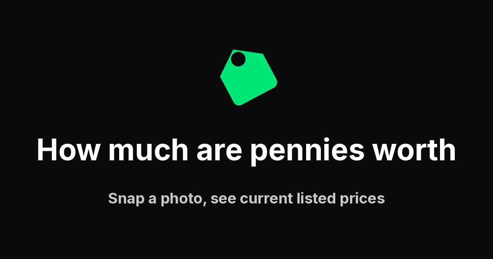

Most pennies are worth exactly one cent. That is still the right starting point, even after the US Mint struck its final circulating pennies at Philadelphia on 12 November 2025, according to Reuters. Pennies remain legal tender, and there are billions still out there. That does not make an ordinary shield cent rare. The pennies worth money are a short list: key-date wheat cents, a few famous errors, and any penny in unusually high grade. Pre-1982 copper cents are worth a bit more than face for their metal, but melting them is illegal in the US.
If you want a useful answer to how much are pennies worth, check the date and mint mark from a photo. That is what  How Much Is It Worth: Scanner is built to do. It reads the date and mint mark for you, then looks at identification data and current listings.
How Much Is It Worth: Scanner is built to do. It reads the date and mint mark for you, then looks at identification data and current listings.
A photo scanner is useful because the details that move the market are small, and they are on the coin. On a Lincoln cent, the mint mark sits on the front, under the date, and no mark usually means Philadelphia. The key-date wheat cents to pull from a jar are the 1909-S VDB (1909, an S under the date, and VDB initials at the bottom of the back), the 1909-S with no initials on the back, the 1914-D, the 1922 No D (a Denver die problem, with no mint mark at all), the 1924-D, and the 1931-S, which had a low mintage of 866,000. The 1909 VDB from Philadelphia, with no mint mark and VDB on the back, is also worth checking, though it is far more common than the San Francisco VDB. Added D marks are a common fake on the 1914-D.
This is a guide to sorting pennies with a scanner. It is not a date-by-date price chart. Catalogue indications on the matching site page come from Numista's Lincoln wheat cent entry (N# 908), checked 16 November 2026, and Numista says those values are an indication only. We will not copy that dated table here as if it were a live quote. For everyday wheat cents, PCGS put it plainly in a September 2023 article: most circulated Lincoln wheat cents are worth three to five cents each. A jar of common wheaties from the 1940s and 1950s is a nice find, not a windfall.
The wartime mix-ups need a separate look. In 1943 the Mint made cents from zinc-coated steel to save copper for the war. They are grey and stick to a magnet. PCGS's 2023 article put a typical 1943 steel cent at about eight to fifteen cents. The famous error is the opposite: a 1943 cent struck in bronze on a leftover copper blank. Numista estimates around 20 were struck at Philadelphia. One graded PCGS MS62 BN sold at Heritage Auctions on 23 February 2021 for $372,000 including buyer's premium, as listed in Numista's past sales. The reverse error exists too: a 1944 cent struck on a leftover steel blank. Both are heavily faked, usually by copper-plating a steel cent or altering a 1948 into a 1943. A genuine bronze 1943 will not stick to a magnet. If yours does not, do not clean it, do not sell it to the first buyer, and get it authenticated by PCGS or NGC.
Lincoln Memorial cents from 1959 to 2008 are mostly face value, but a few varieties are collected hard: the 1969-S doubled die obverse (very scarce and very faked), the 1972 doubled die obverse, the 1983 doubled die reverse, the 1984 doubled ear, the 1992 and 1992-D Close AM, the 1995 doubled die obverse, and the 1998, 1999, and 2000 Wide AM. Prices for these swing hard with grade and the strength of the doubling, so we do not quote one number.
Want to try it? Start your free 3-day trial in the iPhone app at https://apps.apple.com/app/id6832980231. You get one free scan on the website at https://howmuchisitworth.today/what-pennies-are-worth-money. On Android? Check https://howmuchisitworth.today/ for the Android release.
Photograph both sides in soft light, plus a third close-up of the date and mint mark if they are hard to read. Take or upload up to three photos. The app shows the identification first: the date and mint mark. Confirm or edit those details before any price lookup. Coin and banknote identification uses Numista. You get a listed range from current public listings when there are enough of them, plus the listings themselves. If the data is thin, the result is labelled as a rough estimate. The scanner will not invent a precise figure, and it is not a certified appraisal, an insurance valuation, or an offer to buy.
1982 is the changeover year for metal. Lincoln cents dated 1981 and earlier are 95% copper and weigh 3.11 grams. From 1983 they are copper-plated zinc and weigh 2.5 grams. 1982 has both. If you have a kitchen scale that reads to a tenth of a gram, you can sort a pile of 1982s in minutes. Copper cents do contain more than a cent's worth of metal at recent prices, which is why people hoard them. But federal rules (31 CFR Part 82) have prohibited melting or exporting US one-cent and five-cent coins since 2006, apart from limited exceptions. The metal premium is mostly theoretical unless you are selling rolls to another collector.
A listed range is a spread of asking prices, not a sold-price guarantee. Do not clean a penny. Cleaning kills collector value. Get a high-value piece authenticated. A scan is a first look, not a laboratory authentication.
If you decide to list a coin, the app can draft a listing for eBay, Facebook Marketplace, or Gumtree. Common wheat cents sell best in bulk lots, often by the roll or by weight. Key dates and errors are better with a coin dealer, a coin show, or an online listing with sharp photos of both sides and the date. Big finds like a suspected 1943 bronze cent should be graded by PCGS or NGC first and sold through a major auction house. Pawn shops generally are not the place for collector coins.
Tip the jar out and pull every wheat cent (wheat ears on the back, dates 1909 to 1958), every 1943 grey cent, every 1982, and anything that looks doubled. Check the date and mint mark under a bright light. Photograph the keepers, both sides, with the date sharp, then scan them. Most of the rest is face value.
The app is free to download. Start your free 3-day trial to scan in the app, or use one free scan on the website.
If you want to know how much are pennies worth in the jar you actually have, start at https://howmuchisitworth.today/what-pennies-are-worth-money, or download the app and Start your free 3-day trial.
I also wrote a Google Docs walkthrough of the same photo method: How Much Is It Worth: Scanner.